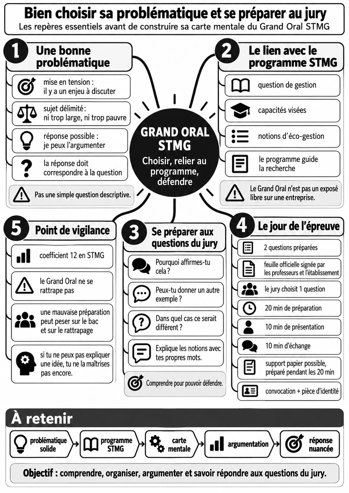
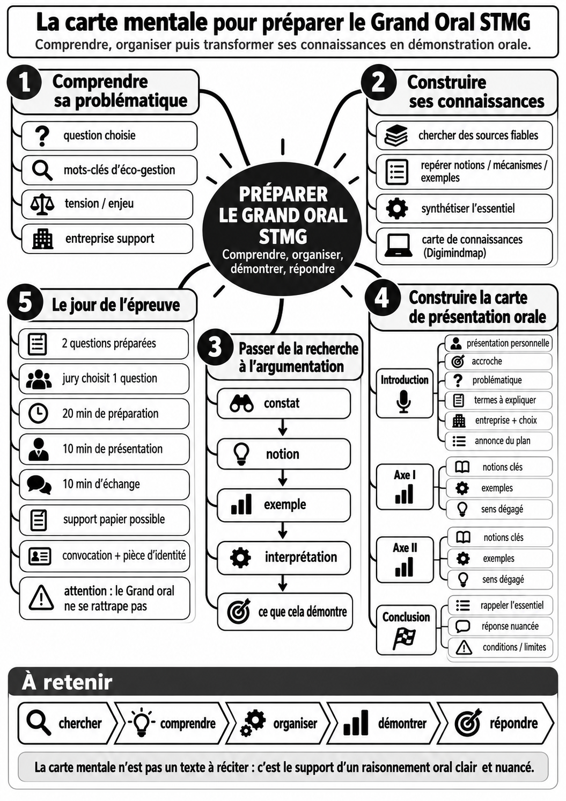
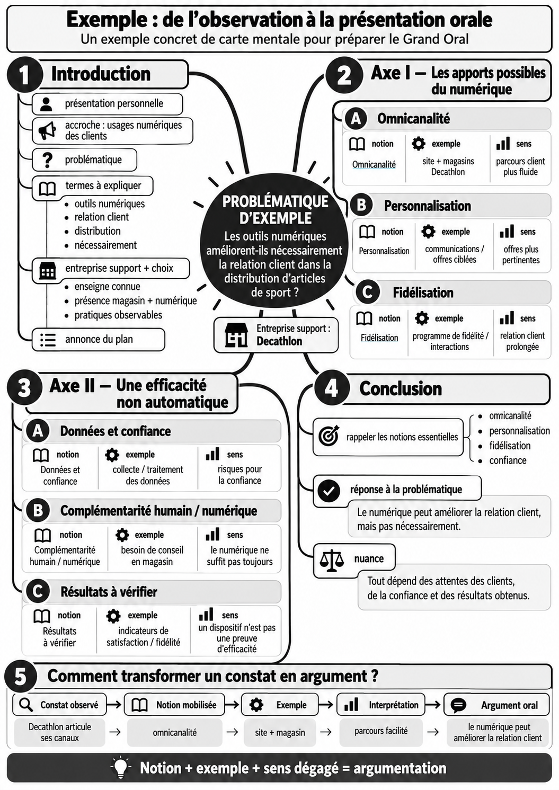

Préparer son Grand oral en trois cartes mentales
Trois fiches à lire dans l'ordre : choisir et connaître les règles → appliquer la méthode → observer un exemple.
1. Bien choisir sa problématique et connaître l'épreuve
Les trois critères d'une problématique, le programme STMG et les modalités de l'épreuve.

2. Comprendre la méthode
De la recherche à la carte de présentation, puis à l'épreuve.

3. Voir un exemple : Decathlon
Une application en mercatique : notion, observation, interprétation, argumentation et réponse nuancée.

Pour s'entraîner — l'essentiel de l'ancien guide
Avant de rédiger : suis tes sources et vérifie ta compréhension
Commence par les notions et capacités du programme STMG. Pour chaque ressource : note son origine, retiens les idées utiles et explique-les avec tes mots. Organise-les dans Digimindmap, puis confronte-les aux pratiques de ton organisation. Ne présente jamais une idée que tu ne peux pas expliquer.
Pendant les entraînements : utilise ta carte, pas un texte appris
Chronomètre les dix minutes, enregistre-toi si possible et entraîne-toi à reconstruire en vingt minutes une carte manuscrite simplifiée. Interromps-toi volontairement, retrouve une branche et reprends le fil de ta démonstration.
Face au jury : réponds, justifie, nuance
Écoute toute la question, prends le temps de réfléchir et réponds en mobilisant une notion, un mécanisme et un exemple. Si un résultat n'est pas démontré, dis-le. Les questions peuvent mobiliser des connaissances du cycle terminal STMG en lien avec ton exposé.
Quelques mots de liaison utiles
Expliquer : parce que, en effet. Illustrer : par exemple, notamment. Nuancer : cependant, toutefois, à condition que. Conclure : ainsi, en définitive. Ces mots aident à articuler les idées, mais ne remplacent pas les arguments.
Matériel et documents le jour de l'épreuve
Apporte ta convocation, une pièce d'identité et la feuille officielle des deux questions validée selon les consignes du lycée. Pour l'épreuve, aucun matériel n'est autorisé hormis le nécessaire d'écriture. Le jury choisit une question ; tu disposes ensuite de vingt minutes pour préparer, si tu le souhaites, un support papier personnel non évalué. Puis : dix minutes de présentation et dix minutes d'échange. Le Grand oral, coefficient 12 en voie technologique en 2027, ne se repasse pas lors du second groupe.